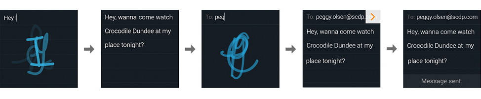

The Single Character Widget (SCW) for iOS is an interactive input method enabling users to handwrite text quickly, efficiently and without necessarily looking at the writing area. It is also particularly adapted to small devices, like digital watches, smartphones, GPS navigation units, etc.
It is designed to ensure a natural, handwriting-based HMI with real-time recognition and ink editing gestures as well as word completion features.
The Single Character Widget can operate in two modes, depending on the set resources:
The working mode is automatically chosen, depending on the configured resources.
